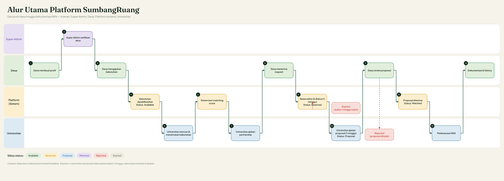

Untuk Masa Depan
Platform yang menghubungkan desa yang punya kebutuhan dengan universitas dan tim mahasiswa yang punya kompetensi untuk membantu.
Desa agraris dengan hasil kopi dan sayur, memiliki balai desa, akses internet, dan 24 UMKM pengolahan pangan.
Perguruan tinggi negeri yang berkomitmen pada pengabdian masyarakat melalui program KKN berkelanjutan.
UMKM lokal belum terdigitalisasi sehingga jangkauan pemasaran terbatas dan pencatatan produk manual.
Ada balai desa, akses internet, dan 10 UMKM aktif yang siap dilibatkan.
Platform toko online sederhana, pelatihan pemasaran digital, dan panduan penggunaan.
Desa Sumber Rejeki
Toko online sederhana untuk 10 UMKM, dilengkapi pelatihan pemasaran digital dan panduan penggunaan.
Agile & Design Thinking dengan pendampingan langsung di lapangan.